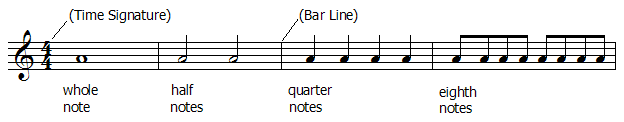

| The duration of a note is indicated by a standard set of symbols and is measured relative to a beat determined by the time signature. |
| The time signature governs how notes are grouped. |
| These groupings are demarcated by vertical lines (bar lines) that divide the staves into measures. |
| Basic duration symbols are shown here. |
|  |
| From a musical standpoint, the notion of objective length, as measured by a clock, is secondary and is determined by a tempo marking, such as allegro (fast) or adagio (slow), or a metronome marking that states the number of beats that occur in one minute. |
Return to music theory.